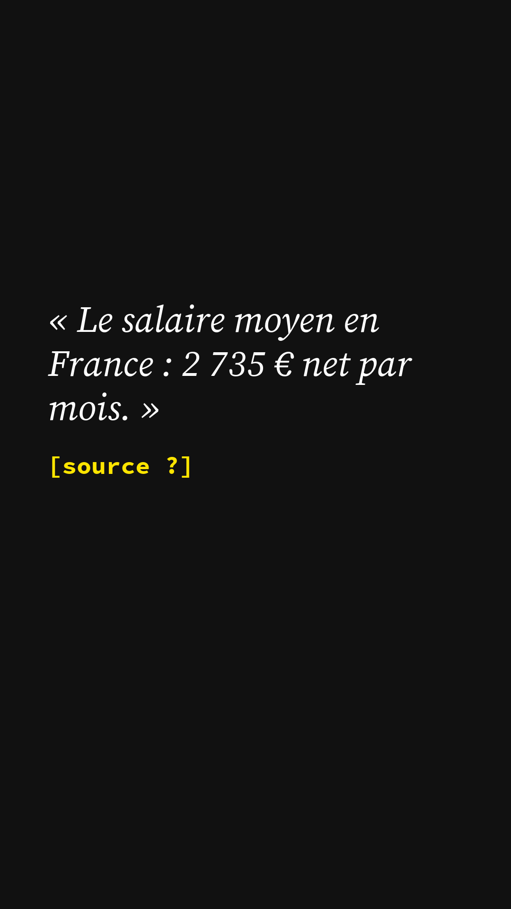
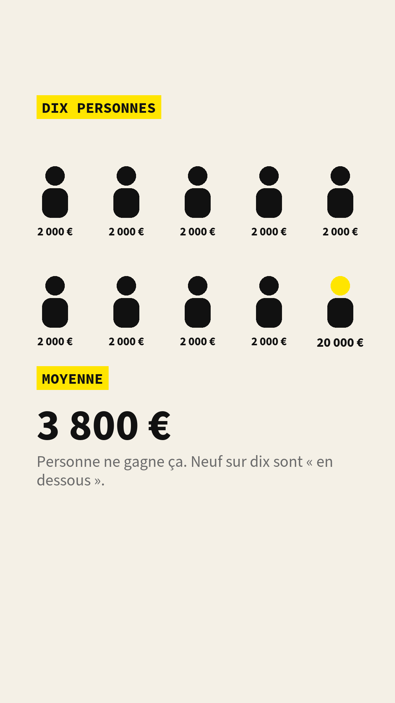
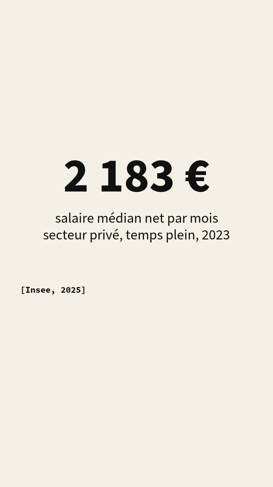
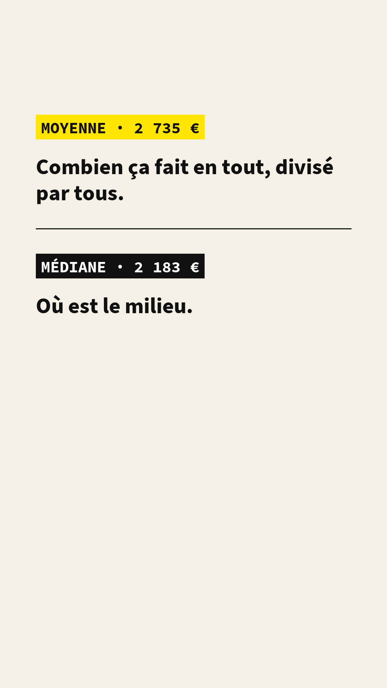
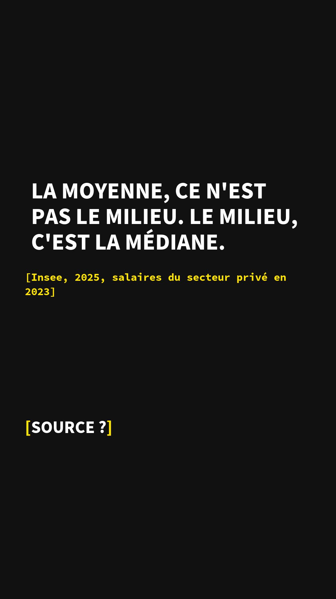

pilote
Cette vidéo sert à tester le format, le tournage et le montage. Elle n'est pas publiée sur les réseaux. Les chiffres marqués à vérifier viennent d'une première lecture et sont en cours de vérification à la source ; ils seront corrigés ici et dans le script si besoin.
1En une phrase
| La question | Quand on dit « salaire moyen », est-ce que la moitié des gens gagnent moins ? |
|---|---|
| La réponse | Non. La moyenne n'est pas le milieu ; le milieu, c'est la médiane, et elle est nettement plus basse. |
| Avec | Hanna Bony · économiste |
| Source principale | Insee, 2024, Les salaires dans le secteur privé en 2023 |
| La limite | Aucun des deux chiffres n'est faux : ils ne mesurent pas la même chose. |
| Thème | Comprendre les chiffres · Les bases, épisode 8 |
| Notion | Moyenne et médiane |
2La transcription
Le texte dit dans la vidéo, mot pour mot, avec le moment et ce qui est à l'écran.
Le salaire moyen en France, c'est 2 735 euros net par mois. Vous gagnez moins ? Vous êtes donc dans la moitié basse. Eh bien non.
(son du carton)
Et c'est tout le problème du mot « moyenne ». Pour la calculer, on additionne tous les salaires, et on divise par le nombre de salariés. Facile. Sauf que les très gros salaires pèsent très lourd dans l'addition.
Imaginez dix personnes. Neuf gagnent 2 000 euros. Une seule en gagne 20 000. La moyenne, c'est 3 800. Personne ne gagne 3 800. Et neuf personnes sur dix sont « en dessous de la moyenne ».
Il existe un autre chiffre : la médiane. On range tout le monde, du plus petit salaire au plus grand, et on prend celui du milieu. La moitié gagne moins, la moitié gagne plus. Ici, la médiane, c'est 2 000.
En France, dans le privé, le salaire médian, c'est 2 183 euros net par mois. 550 euros de moins que la moyenne. Et à peu près deux salariés sur trois gagnent moins que le salaire « moyen ».
Aucun des deux chiffres n'est faux. La moyenne dit combien ça fait en tout, divisé par tout le monde. La médiane dit où est le milieu.
La prochaine fois qu'on vous parle du Français moyen, demandez : lequel des deux ?
La légende publiée avec la vidéo. Le salaire moyen, est-ce que la moitié des gens gagnent moins ? Non : la moyenne n'est pas le milieu. Le milieu, c'est la médiane, 2 183 € net contre 2 735 €. Avec : Hanna Bony, économiste. Source : Insee, Les salaires dans le secteur privé en 2023, Insee Première n° 2020, octobre 2024, lien.
3Ce qu'elle montre, ce qu'elle ne montre pas
- Que la moyenne et la médiane des salaires sont deux chiffres différents, calculés différemment.
- Que la médiane est plus basse que la moyenne, parce que les très hauts salaires tirent la moyenne vers le haut.
- Que « gagner moins que la moyenne » ne veut pas dire « être dans la moitié basse ».
- Que l'un des deux chiffres serait faux ou trompeur en soi : chacun répond à une question différente.
- Ce que gagnent les fonctionnaires, les indépendants ou les salariés à temps partiel : les chiffres portent sur le secteur privé, en équivalent temps plein.
- Comment les salaires ont évolué : c'est une photographie d'une année.
4Les sources
Les articles et rapports cités, avec le lien vers le document d'origine. Vérifié : le chiffre a été relu à la source par nous.
- Insee, « Les salaires dans le secteur privé en 2023 », Insee Première n° 2020, 23 octobre 2024. Salaire net moyen (2 735 €) et salaire net médian (2 183 €) en équivalent temps plein, secteur privé, France ; la publication précise que la médiane est inférieure de 20,2 % à la moyenne. Accès libre. insee.fr/fr/statistiques/8270416
L'exemple des dix personnes (écran 2) est inventé pour expliquer le calcul, et la vidéo le dit : « imaginez ».
5Les données et les calculs
Tout ce qui est calculé dans la vidéo, pour que le traitement des chiffres soit vérifiable, pas seulement leur source.
Les bases de données utilisées
- Insee, base Tous salariés 2023, construite principalement à partir des déclarations sociales nominatives (DSN) des employeurs. C'est la base d'où viennent les deux chiffres. Elle n'est pas téléchargeable telle quelle, mais l'Insee publie les tableaux de la publication : fichier des données de l'Insee Première n° 2020 (xlsx, 57 Ko).
Nos calculs, à télécharger
- video-1-dix-personnes.csv : les dix salaires de l'exemple.
- video-1-insee-salaires-2023.csv : les chiffres de l'Insee, leur champ, leur source, et l'écart calculé.
L'exemple des dix personnes
| Personne | 1 | 2 | 3 | 4 | 5 | 6 | 7 | 8 | 9 | 10 |
|---|---|---|---|---|---|---|---|---|---|---|
| Salaire (€) | 2 000 | 2 000 | 2 000 | 2 000 | 2 000 | 2 000 | 2 000 | 2 000 | 2 000 | 20 000 |
- Moyenne : (9 × 2 000 + 20 000) / 10 = 38 000 / 10 = 3 800 €.
- Médiane : une fois rangés du plus petit au plus grand, les 5e et 6e salaires valent tous deux 2 000 €. La médiane est 2 000 €.
- Personnes sous la moyenne : 9 sur 10.
Les chiffres de l'Insee
| Chiffre | Valeur dans la vidéo | Statut |
|---|---|---|
| Salaire net moyen, équivalent temps plein, secteur privé, 2023 | 2 735 € / mois | vérifié sur insee.fr le 11 octobre 2026 |
| Salaire net médian, équivalent temps plein, secteur privé, 2023 | 2 183 € / mois | vérifié sur insee.fr le 11 octobre 2026 |
| Écart moyenne − médiane | 552 €, dit « 550 » | calcul |
| Part des salariés sous le salaire moyen | « à peu près deux sur trois » | à vérifier : l'Insee Première ne le donne pas ; à chercher dans le fichier xlsx (répartition par déciles), sinon à retirer de la voix |
Le script et l'écran de fin datent la publication de l'Insee de 2025. La publication est l'Insee Première n° 2020 du 23 octobre 2024. Le crochet à l'écran doit devenir Insee, 2024, salaires du secteur privé en 2023.
6Les écrans
Les images posées sur la vidéo, générées à partir de la charte graphique. Format vertical 1080 × 1920.






7Relecture et validation
| Étape | Qui | Statut |
|---|---|---|
| Écriture du script | Hanna Bony | fait |
| Relecture scientifique | à compléter | en cours |
| Relecture éditoriale | à compléter | en cours |
| Validation technique (sous-titres, habillage, sources à l'écran) | à compléter | en cours |
| Accord du chercheur sur la version montée | Hanna Bony | en cours |
8Corrections
Aucune correction pour l'instant. Une erreur ? Signalez-la.